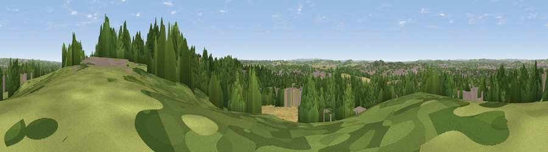

Viewpoint near Ruddington
#30639 in England · top 55% of its area beats it · near RuddingtonThe view, rendered

A 360° render of this exact spot computed from the terrain model, tree cover and land cover — summer colours, afternoon light, calibrated against photographs of famous viewpoints. Real trees, hedges and buildings will differ in detail.
The panorama
Grey silhouette: terrain skyline in each direction (720 bearings, Earth curvature and refraction included). Dashed green: skyline with trees (+15 m) and buildings (+8 m) as obstacles. Blue strip: how far the ground is visible on each bearing.
Where the view opens
Wedge length = distance to the farthest visible ground on that bearing (vegetation-aware). Rings at 10, 25 and 50 km.
What fills the view
36% woodland · 27% built-up · 21% grassland · 15% cropland
Angular shares of the visible panorama (visual magnitude), not map area. Landscape diversity 0.59 (0–1 Shannon).
Key numbers
More beautiful places nearby
The staircase of upgrades: each row has a higher view potential than everything closer. Driving times are estimates from straight-line distance, calibrated against real road routing — check an actual route before setting out.
| Place | Direction | Drive | Score |
|---|---|---|---|
| Wilford Hill | E · 0 km | ~1 min | 46.0 |
| Viewpoint near Ruddington | SSE · 1 km | ~3 min | 47.9 |
| Brands Hill | WSW · 5 km | ~11 min | 57.9 |
| Viewpoint near Gotham | SW · 6 km | ~13 min | 60.1 |
| Viewpoint near Strelley | NW · 10 km | ~19 min | 62.6 |
| No Man's Lane | WNW · 12 km | ~23 min | 65.8 |
| Ives Head | SSW · 21 km | ~35 min | 73.3 |
| Viewpoint near Woodhouse Eaves | SSW · 21 km | ~36 min | 77.7 |
52.91001, -1.14235 · source: screening · position refined by local search. Computed location — check access rights before visiting.